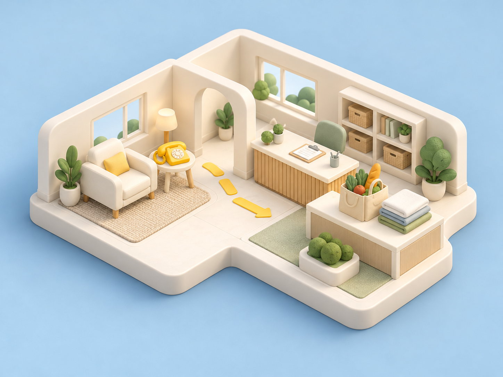

Care Call AI
Hear the need. Plan the help. Care Call AI helps a coordinator turn approved phone check-ins into everyday support requests, review uncertain results and prepare a printable handoff for the team.
Author-hosted project. The application is proprietary; this guide explains the workflow. It is designed for non-clinical support.

From a call to a handoff.
The coordinator remains responsible for outreach and follow-through. CALL-E handles the conversation; the app organizes the resulting requests.
Review and approve
Check recipient eligibility, call context and the proposed batch. A no-call preflight precedes the coordinator’s explicit approval.
Collect the request
Import completed call results and supporting conversation text. Keep unclear, restricted and no-request outcomes available for review.
Prepare the handoff
Combine same-day needs, preserve their history and let the coordinator review a printable support order for the relevant team.
A written handoff example
This fictional example explains the record flow. It does not describe a real person, call or delivery.
- First request
- A person asks for help with cleaning.
- Later callback
- The same person also asks for groceries that day.
- Coordinator review
- Keep the cleaning request and add the groceries, with their history.
- Team handoff
- Review and print the requests. A person arranges the actual help.
Keep the request traceable.
The useful design idea is the connection between outreach, review, request history and a practical handoff.
See the author’s walkthroughGive each outcome a place.
A useful support workflow needs a visible result even when a call does not produce a new request. Coordinators need to distinguish a request, no request, a failed connection and an outcome requiring human review.
- Carry context forward. A same-day callback should retain earlier requests and show what changed.
- Keep approval specific. Review who will be called and what the outreach is meant to collect.
- Make the handoff usable. A printable sheet can give a team concrete work to review and complete.
- Keep fulfillment separate. A recorded request or printed sheet does not establish that help was delivered.
The author’s proprietary license permits limited hackathon evaluation. General reuse, redistribution and hosting of the application require separate permission. This case does not distribute its code or design assets.
What’s been checked.
The public hackathon edition supports inspection of the workflow. The author describes a separate private production repository.
Reviewed source:b10621eb
- Local checks19 Oct 2026
- 162 backend tests and 134 frontend tests on Node 24 passed. Type checks and a production build passed. An earlier Node 26 frontend test run had 52 failures in its localStorage test environment.
- Source refresh23 Oct 2026
- The public repository still points to the reviewed revision. Its README, project entries and proprietary license were read again for this guide.
A coordinator stays involved.
- Production is unverified here. Live deployment, Siri on a physical device and real support delivery were not independently validated in these checks.
- Results need review. The app accepts structured needs and can also extract them from a summary. A strict result schema is optional in the Developer API configuration.
- Everyday support only. The author excludes clinical care and emergency response. Actual transport, deliveries and other services still require people to arrange them.
Follow a request through.
See how the author connects a check-in with a reviewed handoff.
Care Call AI is maintained by Alex Raixon. CALL-E maintains this independently written case guide. The support-room illustration is original concept art; the written example is fictional. Neither is evidence of a real call or delivery.